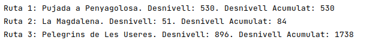
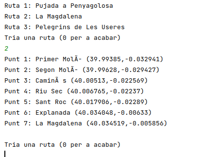

6.- Accés des de Kotlin
Utilitzarem les mateixes llibreries que en el tema 3:
- Si és un accés senzill, utilitzem la llibreria org.json
- Si l'accés és més complicat potser ens convinga utilitzar la llibreria Moshi per a mapejar jason a objectes
En el següent exemple utilitzem el primer driver, no ens valdrà la pena construir les classes per a mapejar amb Moshi.
Observeu com ara estem accedint directament a la pàgina del Web Service, en compte d'analitzar un fitxer.
Ho farem en un projecte nou d'IntelliJ anomenat AnnexWebService,
Ací tenim un exemple d'utilització. Cuideu de canviar l'adreça per la del vostre servidor, si no és localhost. Guardeu-lo amb el nom Exemple1_ Rutes.kt:
import org.json.JSONArray
import org.json.JSONObject
import org.json.JSONTokener
import java.net.URL
fun main(args: Array<String>) {
val adr = URL("http://localhost:41062/www/rutes_2.php");
val rutes = JSONTokener(adr.openConnection().getInputStream()).nextValue() as JSONArray
for (r in rutes){
r as JSONObject
println("Ruta " + r.get("num_r").toString() + ": " + r.get("nom_r")
.toString() + ". Desnivell: " + r.get("desn")
.toString() + ". Desnivell Acumulat: " + r.get("desn_acum") )
}
}Ens donarà aquest resultat:

I aquest seria l'exemple en el qual a partir de les rutes obtenim els seus punts. L'hem fet molt senzill, de manera que després de mostrar les rutes existents, demana per teclat un número, i mostra els punts de la ruta triada, fins que s'introdueix un 0. I recordeu que si el vostre servidor no està en localhost, l'haureu de substituir, i observeu que ara està en dos llocs. Guardeu-lo amb el nom Exemple2_RutesPunts.kt:
import org.json.JSONArray
import org.json.JSONObject
import org.json.JSONTokener
import java.net.URL
import java.util.*
fun main(args: Array<String>) {
val url1 = URL("http://localhost:41062/www/rutes_2.php");
val rutes = JSONTokener(url1.openConnection().getInputStream()).nextValue() as JSONArray
val sc = Scanner(System.`in`)
for (r in rutes){
r as JSONObject
println("Ruta " + r.get("num_r").toString() + ": " + r.get("nom_r") )
}
println("Tria una ruta (0 per a acabar)")
var opcio = sc.nextInt()
while (opcio != 0){
if (opcio>0 && opcio<=rutes.length()){
val url2 = URL("http://localhost:41062/www/punts.php?num_r="+opcio);
val punts = JSONTokener(url2.openConnection().getInputStream()).nextValue() as JSONArray
for (p in punts){
p as JSONObject
println("Punt " + p.get("num_p") + ": " + p.get("nom_p") + " (" + p.get("latitud") + "," + p.get("longitud") + ")")
}
println()
}
println("Tria una ruta (0 per a acabar)")
opcio = sc.nextInt()
}
}I aquest seria un exemple d'utilització:

Llicenciat sota la Llicència Creative Commons Reconeixement NoComercial CompartirIgual 2.5